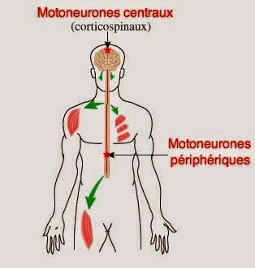
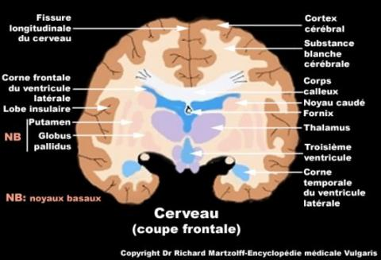

Bienvenue Sur Medical Education
Le systeme nerveux
DefinitionLe systeme nerveux est le centre d'integration et de traitement des donnees. C'est le siege des emotions, de la pensee, de la conscience. Mais il a aussi la teche du maintient de l'homeostasie. Il remplit trois fonctions liees: la reception et le transport de l'information sensorielle, mais aussi son integration et de la reponse a ce stimulus.
Organisation du systeme nerveux
- Systeme nerveux cerebro-spinal :
- Systeme nerveux central :
- Moelle epiniere.
- Encephale :
- Cerveau.
- Tronc cerebral.
- Cervelet.
- Systeme nerveux peripherique :
- Nerfs creniens.
- Nerfs rachidiens.
- Systeme nerveux vegetatif :
- Systeme nerveux sympathique.
- Systeme nerveux parasympathique.
Le tissu nerveux : la cellule nerveuse, le neurone
Le tissu nerveux est compose de deux cellules : les neurones et les cellules de la nevroglie, celles-ci ont une fonction de soutien, de nutrition et d'isolement des neurones (elles forment les gaines de myeline).
Le neurone
Le neurone est une cellule nerveuse, element de base du tissu nerveux. Il est compose de d'une membrane, un noyau, du cytoplasme et de neurofibrilles.

Le neurone est compose de deux substances
- Substance grise : zone formee des corps cellulaires des neurones.
- Substance blanche : zone formee des prolongements des neurones (axone et dendrites).
- Dendrites : prolongements cellulaires courts aux nombreuses ramifications, assez nombreux. Elles forment la structure receptrice, recevant de tres grands nombres de signaux, grece a la surface qu'elles couvrent. Leurs points de contact, les synapses, sont des lieux de transmission chimiques (les neurotransmetteurs).
- Axone : prolongement cytoplasmique unique qui transmet l'influx nerveux du corps cellulaires vers l'extremite de l'arborisation. L'axone est protege par la gaine de myeline.
- La gaine de myeline: cette gaine isole electriquement les axones les uns des autres, mais accroet egalement la vitesse du transport electrique. La gaine est composee d'un tres grand nombre de cellules, dites cellules de Schwann, ne se touchant pas.
Le systeme nerveux central
Le systeme nerveux central comporte deux parties :
- L'encephale.
- La moelle epiniere.
L'encephale est constituer de 3 parties :
- Le cerveau.
- Le tronc cerebral.
- Le cervelet.
Le cerveau est loge dans la partie superieure et anterieure de la boete crenienne.
Il est constitue de 2 hemisphere cerebraux creuses par les ventricules contenants le liquide cephalo-rachidien.
Chaque hemisphere est marque par des scissures qui delimitent les lobes : 4 lobes par hemisphere :
- Lobe frontal.
- Lobe parietal.
- Lobe temporal.
- Lobe occipital.
Le cerveau est compose d'une substance grise a sa peripherie, et une substance blanche centrale.

Le tronc cerebral
Le tronc cerebral est situe entre le cerveau et la moelle epiniere.
Il donne naissance aux 12 paires de nerfs creniens.
Il est compose de substance blanche a la peripherie et substance grise au centre.
Il a 2 fonctions :
- Voie de conduction.
- Centre de certains centres vegetatifs.
Le cervelet est situe a la base du crene, derriere le tronc cerebral.
Il a pour rele :
- L'equilibre.
- La coordination des mouvements.
- Le tonus musculaire.
La moelle epiniere
La moelle epiniere fait suite au tronc cerebral. Elle est enfermee dans le canal rachidien.
Elle est composee d'une partie centrale, la substance grise, et d'une partie peripherique, la substance blanche. Au centre se trouve le canal de l'ependyme.
La moelle epiniere donne naissance aux 31 paires de nerfs rachidiens. Chaque nerf contient 2 racines : une posterieure qui est sensitive et l’autre anterieure qui est motrice.
Elle a plusieurs fonctions :
- Arc reflexe : par la substance grise.
- Voie de transmission des influx vers les centres superieures : par la substance blanche.
Le syteme nerveux peripherique
Nerfs creniens
Les nerfs creniens sont aux nombres de 12 paires, ils naissent au tronc cerebral.
Il en existe 3 types :
- Sensitif : transmet l'information de la peripherie au centre.
- Moteur : transmet l'information du centre a la peripherie.
- Mixte : possede la fonction sensitive et motrice.
Nerfs rachidiens
Les nerfs rachidiens sont aux nombres de 31 paires, ils naissent a la moelle epiniere.
Ils sont constitues d'une racine anterieure (motrice) et d'une racine posterieure (sensitive), ces deux racines se reunissent apres la sortie de la moelle epiniere pour former le nerf rachidien.
Certains des nerfs, s'anastomosent pour former des plexus (ensemble de fibres nerveuses innervant un territoire organique determine) : cervical, brachial, dorsal, lombaire, sacre, honteux.
Le systeme nerveux vegetatif
Le systeme nerveux vegetatif dirige et coordonne les fonctions internes de l'organisme, son fonctionnement est automatique.
Il est compose par :
- Des centres nerveux : centres visceraux, centres medullaires, centres du tronc cerebral, centres du diencephale.
- Des nerfs du systeme vegetatif : fibres sensitives et fibres motrices.
Le systeme sympathique se presente sous forme d'une serie de ganglions etages tout le long du rachis, unis les uns aux autres par des filets nerveux constituant la chaene sympathique.
Le sympathique se distribue a l'ensemble du corps : cœur, vaisseaux, œil, glandes, tube digestif, bronche, appareil genital, foie, rate.
Le neurotransmetteur du systeme sympathique est l'adrenaline.
Le systeme parasympathique
Le systeme parasympathique est forme par une serie de fibres nerveuses annexees a certains nerfs du systeme cerebro-spinal (systeme nerveux central + systeme nerveux peripherique) dont elles suivent le trajet.
Le neurotransmetteur du systeme parasympathique est l'acetylcholine.
L'influx nerveux
Voir aussi :